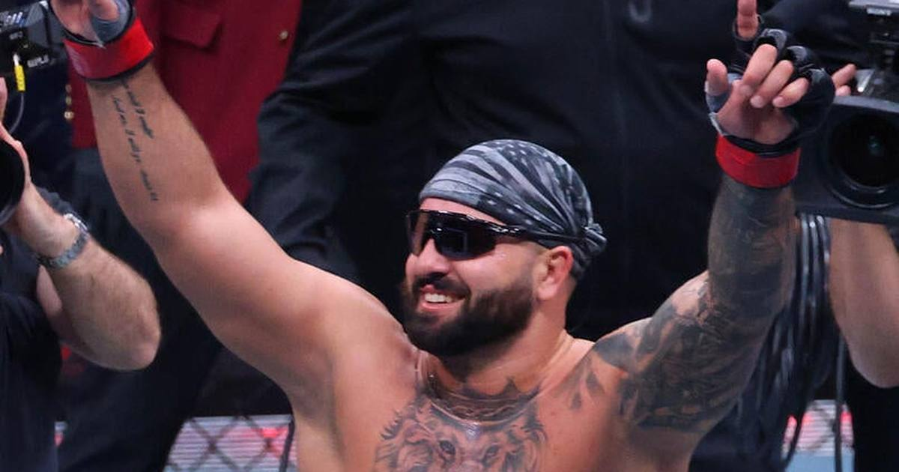

TSL Bets: The Saturday parlay (~+449) — Mitchell OVER 14.5 points, Hokit moneyline at UFC 334
Davion Mitchell has cleared 14.5 points in 8 of his last 10, and Josh Hokit is a live +180 underdog with the exact wrestling game to attack Ciryl Gane's weakest skill. Two legs, about +449.

Leg 1 — the game
Detroit Pistons (8-3) at Miami Heat (6-6) — 8:00 PM ET, Kaseya Center, Miami, NBA TV
Pistons -4.5, total 229.5 (lines via Nathanite).
Injuries — Detroit: Jalen Duren is out with a right hamstring strain. Isaiah Joe is out with a right hip contusion.
Injuries — Miami: Klay Thompson (ankle) and Pelle Larsson (illness) both sat out Friday; Giannis Antetokounmpo is probable through a wrist issue.
Storylines: Davion Mitchell is running the hottest stretch of his season — 22 points and a career-high-tying 17 assists last night against Cleveland, and he has cleared 14.5 points in 8 of his last 10 games. In the nine games Thompson has missed, Mitchell averages 15.6 points, still above this line. Detroit's defense has to pick its poison between Giannis, Bam and a point guard who just dissected the Cavs.
Leg 2 — the fight
Ciryl Gane (14-2, 1 NC) vs. Josh Hokit (10-0) — UFC heavyweight title, 5 rounds, ~11:30 PM ET, Madison Square Garden, main card 9:00 PM ET on Paramount+
Gane -218, Hokit +180, rounds total 3.5 (over +130, under -166) — DraftKings via ESPN.
Weigh-ins: Gane 242.6 lbs, Hokit 231.4 lbs — both made weight, and all four title-fight fighters are official. Two prelim fighters missed weight; neither is in this fight.
Camp/availability: Hokit trains at Jackson-Wink MMA in New Mexico. Gane became interim champion by stopping Alex Pereira in the second round on June 14, then was promoted to undisputed champion after Tom Aspinall could not return in time to defend. Hokit went from Dana White's Contender Series to a title shot in 53 weeks — he beat Curtis Blaydes by decision and stopped Derrick Lewis by second-round TKO on that same June 14 card.
Storylines: Gane's takedown defense sits at 47%, and both of his career losses came against wrestling: Francis Ngannou out-wrestled him to a decision in January 2022, and Jon Jones submitted him in 2:04 in March 2023. Hokit is a two-time All-American wrestler who finished fifth at the 2019 NCAA Championships at 197 pounds. His camp has said openly the plan is to put Gane on his back and rough him up — the exact thing Jones and Ngannou did. The risk is real too: Hokit has never fought five rounds, Gane owns a 7.5-inch reach advantage, and Hokit absorbs more than twice as many significant strikes per minute as the champion.
The bet
Davion Mitchell OVER 14.5 points (-104, FanDuel) + Josh Hokit moneyline (+180, DraftKings) — about +449. Mitchell's line is the steadier leg: 8 of 10, 4 of his last 5, and a matchup where Miami's short-handed backcourt keeps the ball in his hands. Hokit is the upside leg: a plus-money dog with a real stylistic path, not a lottery ticket — the wrestling edge is documented, the camp is the same one that produced the Jones blueprint, and two former champions have already shown the way to beat Gane. A $10 ticket returns about $54.90.
The honest caveat
Both legs can lose on their own terms. Mitchell is coming off a career night — 22 and 17 — and regression is a real thing; if the Pistons blow Miami out, his minutes shrink. Hokit has to close distance on a superior striker for five rounds without getting picked apart, and his takedown numbers (1.50 per 15 minutes, and 0-for against Blaydes) say the wrestling edge is a plan, not a guarantee. This parlay pays +449 because both things have to happen. That is the deal.
If you or someone you know has a gambling problem, call 1-800-GAMBLER.
Sources
• Best NBA Player Props Today, November 14, 2026 (StatsBench)
• UFC 334 Odds and Fight Card: Gane vs Hokit (Scores and Stats)
• Ciryl Gane vs. Josh Hokit prediction, pick (MMA Junkie)
• UFC 334 Predictions: Gane vs Hokit Odds & Best Betting Picks (Smart Betting Guide)
• UFC 334 championship fights are official following Friday's weigh-in (POST Wrestling)